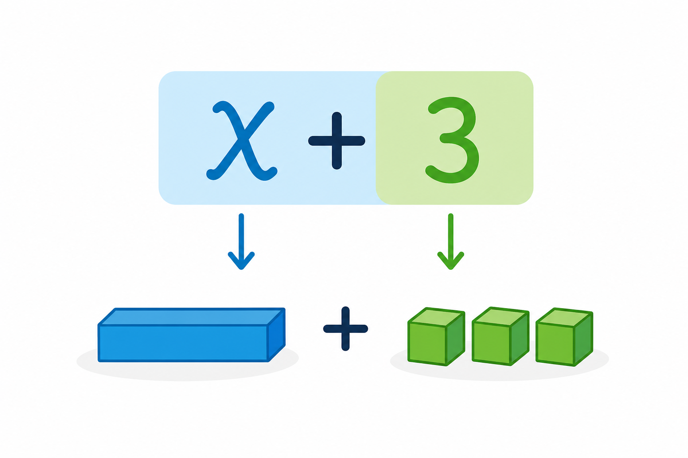

1
wyrażenie dwumianowane
двочленний вираз

📘 Co to jest? Що це?
Wyrażenie dwumianowane łączy dwie jednostki tej samej wielkości (np. m i cm).
Двочленний вираз з'єднує дві одиниці тієї самої величини (напр. м і см).
⭐ Zapamiętaj Запам'ятай
2 m 15 cm
Читаємо: «2 метри і 15 сантиметрів». Потім переводимо в одну одиницю.
✅ Przykłady Приклади
- (a+b)² = a²+2ab+b²
- (x+3)²
- wzór skróconego mnożenia
- (2x−1)²
- rozwinięcie wzoru